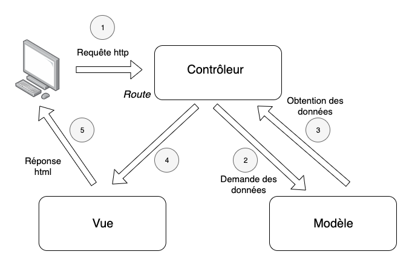

« Un patron de conception (souvent appelé design pattern) est un arrangement caractéristique de modules, reconnu comme bonne pratique en réponse à un problème de conception d'un logiciel. Il décrit une solution standard, utilisable dans la conception de différents logiciels. »
— Wikipédia
En d'autres termes : ce sont des manières classiques et courantes de résoudre des problèmes communs en programmation.
Sont ajoutées à cette liste des notions qui ne sont pas des design patterns, mais qui s'intègrent bien à cette partie du cours.
On peut classer les patrons de conception en trois familles :
D'autres patterns, comme MVC, décrivent l'architecture d'une application entière.
Il en existe beaucoup d'autres, que nous ne verrons pas dans ce cours :
Une classe abstraite est une classe qui ne peut pas être instanciée.
Elle ne sera utilisée que comme parent d'une autre classe.
Cela permet de définir des ensembles de méthodes communes à plusieurs classes.
JavaScript ne possède pas de classes abstraites natives : on les simule en levant une erreur dans le constructeur, à l'aide de this.constructor, qui indique la classe réellement instanciée.
D'autres langages, comme TypeScript, Java ou C#, possèdent le mot-clé abstract.
|
|
À utiliser quand :
À ne pas utiliser quand :
Parfois, il est utile de placer des valeurs ou des fonctions dans des objets, sans qu'elles soient liées à une instance.
C'est le cas de Math :
const area = Math.PI * 3 * 3;
const cosinus = Math.cos(12);
const absolute = Math.abs(-45);
const eulerNumber = Math.E;
Math n'est jamais instancié. À aucun moment on ne fait const value = new Math();
Tous les éléments de Math sont dits statiques. Les éléments statiques sont simplement « rangés » dans une classe.
Les éléments statiques sont indiqués par le mot-clé static.
class MyMath {
static PI = 3.141592653589793;
static E = 2.718281828459045;
static add(a, b) {
return a + b;
}
static square(x) {
return x * x;
}
}
console.log(MyMath.PI); // 3.141592653589793
console.log(MyMath.add(3, 5)); // 8
On peut également empêcher l'instanciation de la même manière que pour une classe abstraite.
Il est possible de combiner éléments statiques et non statiques dans une même classe.
En JavaScript moderne, une classe ne contenant que des éléments statiques peut souvent être remplacée par un module :
|
|
Le module joue le rôle d'espace de noms (namespace), sans avoir besoin de créer de classe.
À utiliser quand :
À ne pas utiliser quand :
Un Singleton est un objet ne pouvant être instancié qu'une seule fois.
Il est global à toute l'exécution du programme.
Tenter de créer un deuxième objet peut soit lever une erreur, soit retourner le même objet global.
|
Il existe plusieurs implémentations possibles. On pourrait aussi utiliser une fonction statique |
En JavaScript, la manière la plus simple de créer un Singleton est d'exporter une instance depuis un module :
|
|
Un module n'est exécuté qu'une seule fois : tous les modules qui l'importent reçoivent le même objet.
À utiliser quand :
À ne pas utiliser quand :
Attention : le Singleton est un pattern souvent critiqué, dont il est facile d'abuser.
On a tendance à l'utiliser pour se simplifier la vie, alors qu'il crée de nombreux effets de bord !
Les principaux problèmes :
Certains objets peuvent devenir complexes à construire, avec des constructeurs possédant beaucoup de paramètres.
Dans d'autres cas, il est difficile de construire un objet en une fois, à un seul endroit dans le code.
Le pattern Builder vise à construire un objet final en plusieurs étapes.
// Classe décrivant une requête SQL
class Query {
constructor(select, from, where, order) {
this.select = select;
this.from = from;
this.where = where;
this.order = order;
}
toString() {
return `SELECT ${this.select} FROM ${this.from} `
+ `WHERE ${this.where} ORDER BY ${this.order}`;
}
}
Cet exemple sert uniquement à illustrer le pattern. Construire du SQL en concaténant des chaînes expose aux injections SQL : en pratique, on utilise des requêtes paramétrées.
class QueryBuilder {
setSelect(fields) {
this.select = fields;
return this;
}
setFrom(table) {
this.from = table;
return this;
}
setWhere(cond) {
this.where = cond;
return this;
}
setOrderBy(field) {
this.orderBy = field;
return this;
}
build() {
return new Query(this.select, this.from, this.where, this.orderBy);
}
}
const query = new QueryBuilder()
.setSelect("*")
.setFrom("users")
.setWhere("age > 18")
.setOrderBy("name")
.build();
console.log(query.toString());
Le Builder peut aussi être rempli progressivement, à différents endroits du code (par exemple au fil des choix de l'utilisateur dans un formulaire de recherche), puis construit une seule fois à la fin :
const qBuilder = new QueryBuilder();
/* ... */
qBuilder.setSelect("*");
/* ... */
qBuilder.setFrom("users");
/* ... */
qBuilder.setWhere("age > 18");
/* ... */
qBuilder.setOrderBy("name");
/* ... */
const query = qBuilder.build();
console.log(query.toString());
Que se passe-t-il si on oublie une étape ?
const query = new QueryBuilder()
.setFrom("users")
.build();
console.log(query.toString());
// SELECT undefined FROM users WHERE undefined ORDER BY undefined
La requête produite est invalide !
Un bon Builder doit gérer les étapes optionnelles, et vérifier que l'objet est valide avant de le construire.
|
|
Désormais, new QueryBuilder().setFrom("users").build() produit SELECT * FROM users.
À utiliser quand :
À ne pas utiliser quand :
Un Adapter permet de transformer l'interface d'une classe pour qu'elle « s'adapte » à un besoin donné.
Exemple : notre application affiche des couches à partir d'objets qui possèdent une méthode readGeoJSON().
// Le code client attend un objet possédant une méthode readGeoJSON()
function displayLayer(reader) {
const geojson = reader.readGeoJSON();
/* ... affichage sur la carte ... */
}
class GeoJSONReader {
constructor(filePath) {
this.filePath = filePath;
}
readGeoJSON() { /* Lit le fichier GeoJSON */ }
}
Une librairie nous fournit une classe KMLReader, que nous ne pouvons pas modifier. Elle ne possède pas de méthode readGeoJSON().
|
|
Le code client peut maintenant utiliser les deux sources de la même manière :
displayLayer(new GeoJSONReader("communes.geojson"));
displayLayer(new GeoJSONAdapter(new KMLReader("map.kml")));
displayLayer() n'a pas besoin de savoir que les données proviennent d'un fichier KML.
On retrouve cette idée dans OpenLayers : les classes du module ol/format (GeoJSON, KML, GPX, etc.) exposent toutes la même méthode readFeatures(), quel que soit le format lu.
À utiliser quand :
À ne pas utiliser quand :
Un Decorator enveloppe un objet pour lui ajouter un comportement, tout en exposant la même interface que l'objet décoré.
Comme le décorateur a la même interface que l'objet qu'il enveloppe, il peut lui-même être décoré : on peut empiler plusieurs décorateurs.
Dans l'exemple suivant, tous les objets possèdent une méthode render().
class Text {
constructor(content) { this.content = content; }
render() { return this.content; }
}
class Bold {
constructor(text) { this.text = text; }
render() { return `<b>${this.text.render()}</b>`; }
}
class Italic {
constructor(text) { this.text = text; }
render() { return `<i>${this.text.render()}</i>`; }
}
class Underline {
constructor(text) { this.text = text; }
render() { return `<u>${this.text.render()}</u>`; }
}
const text = new Text("Hello world");
const formatted = new Underline(new Bold(new Italic(text)));
console.log(formatted.render()); // <u><b><i>Hello world</i></b></u>
À utiliser quand :
À ne pas utiliser quand :
Un objet (le sujet) maintient une liste d'abonnés (les observers), et les notifie automatiquement lorsqu'un événement se produit.
Le sujet n'a pas besoin de connaître ses abonnés : il se contente de les prévenir.
Vous utilisez déjà ce pattern :
button.addEventListener('click', callback)map.on('click', callback)
class EventEmitter {
constructor() {
this.listeners = {}; // Liste des abonnés, par type d'événement
}
// Abonne une fonction à un événement
on(event, callback) {
if (!this.listeners[event]) {
this.listeners[event] = [];
}
this.listeners[event].push(callback);
}
// Notifie tous les abonnés d'un événement
emit(event, data) {
for (const callback of this.listeners[event] || []) {
callback(data);
}
}
}
class Sensor extends EventEmitter {
setValue(value) {
this.value = value;
this.emit("change", value); // Prévient tous les abonnés
}
}
const temperature = new Sensor();
// Deux abonnés indépendants, qui ne se connaissent pas
temperature.on("change", (value) => console.log("Température :", value));
temperature.on("change", (value) => {
if (value > 30) {
console.log("Alerte canicule !");
}
});
temperature.setValue(35);
// Température : 35
// Alerte canicule !
À utiliser quand :
À ne pas utiliser quand :
Tiré de Wikipédia :
Modèle-vue-contrôleur ou MVC est un motif d'architecture logicielle destiné aux interfaces graphiques, lancé en 1978 et très populaire pour les applications web. Le motif est composé de trois types de modules ayant trois responsabilités différentes : les modèles, les vues et les contrôleurs.

Quand faut-il utiliser des patrons de conception ?
Comment les utiliser efficacement ?
La réponse est simple : K.I.S.S. (Keep It Simple, Stupid)
Autrement dit : seulement si cela rend le code plus clair et plus facile à comprendre.
Et Y.A.G.N.I. (You Aren't Gonna Need It) : n'ajoutez pas de pattern « au cas où » pour un besoin futur hypothétique.
Une erreur classique est la surutilisation de patterns : ce n'est pas parce qu'ils existent qu'il faut les utiliser. Ce ne sont que des outils pour atteindre un code de qualité, pas des garanties !
Voir par exemple le dépôt satirique https://github.com/EnterpriseQualityCoding/FizzBuzzEnterpriseEdition
Ce programme effectue un calcul très simple, mais noyé dans un code chaotique.